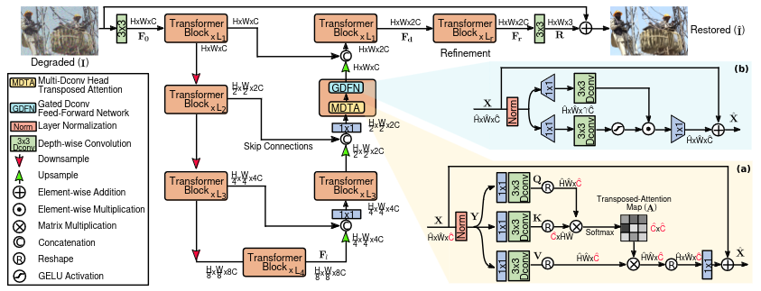

Restormer
- class deepinv.models.Restormer(in_channels: int = 3, out_channels: int = 3, dim: int = 48, num_blocks: List[int] = [4, 6, 6, 8], num_refinement_blocks: int = 4, heads: List[int] = [1, 2, 4, 8], ffn_expansion_factor: float = 2.66, bias: bool = False, LayerNorm_type: str = 'BiasFree', dual_pixel_task: bool = False, pretrained: str | None = 'denoising', device: device | None = None)[source]
Bases:
ModuleRestormer denoiser network.
This network architecture was proposed in the paper: Restormer: Efficient Transformer for High-Resolution Image Restoration
By default, the model is a denoising network with pretrained weights. For other tasks such as deraining, some arguments needs to be adapted.Usage :model = Restormer()output = model(input)- Parameters:
in_channels (int) – number of channels of the input.
out_channels (int) – number of channels of the output.
dim (int) – number of channels after the first conv operation (
in_channel, H, W) -> (dim, H, W).dimcorresponds toCin the figure.num_blocks (list) – number of
TransformerBlockfor each level of scale in the encoder-decoder stage with a total of 4-level of scales.num_blocks = [L1, L2, L3, L4]with L1 ≤ L2 ≤ L3 ≤ L4.num_refinement_blocks (int) – number of
TransformerBlockin the refinement stage after the decoder stage. Corresponds toLrin the figure.heads (list) – number of heads in
TransformerBlockfor each level of scale in the encoder-decoder stage and in the refinement stage. At same scale, all TransformerBlock have the same number of heads. The number of heads for the refinement block isheads[0].ffn_expansion_factor (float) – corresponds to \(\eta\) in GDFN.
bias (bool) – Add bias or not in each of the Attention and Feedforward layers inside of the
TransformerBlock.LayerNorm_type (str) – Add bias or not in each of the LayerNorm inside of the
TransformerBlock.LayerNorm_type = 'BiasFree' / 'WithBias'.dual_pixel_task (bool) – Should be true if dual-pixel defocus deblurring is enabled, false for single-pixel deblurring and other tasks.
device (NoneType, torch.device) – Instruct our module to be either on cpu or on gpu. Default to
None, which suggests working on cpu.pretrained (NoneType, str) – Default to
'denoising'.if pretrained = 'denoising' / 'denoising_gray' / 'denoising_color' / 'denoising_real' / 'deraining' / 'defocus_deblurring', will download weights from the HuggingFace Hub.if pretrained = '\*.pth', will load weights from a local pth file.train (bool) – training or testing mode.
Note
To obtain good performance on a broad range of noise levels, even with limited noise levels during training, it is recommended to remove all additive constants by setting :
LayerNorm_type='BiasFree'andbias=False(Robust And Interpretable Bling Image Denoising Via Bias-Free Convolutional Neural Networks).- forward(x, sigma=None)[source]
Run the denoiser on noisy image. The noise level is not used in this denoiser.
- Parameters:
x (torch.Tensor) – noisy image
sigma (float) – noise level (not used)
- forward_restormer(x)[source]
Run the Restormer network on the input image.
The input shape is expected to be divisible by 8.
- Parameters:
x (torch.Tensor) – input image
- is_standard_deblurring_network(in_channels, out_channels, dim, num_blocks, num_refinement_blocks, heads, ffn_expansion_factor, bias, LayerNorm_type, dual_pixel_task)[source]
Check if model params are the params used to pre-trained the standard network for deblurring.
{kind=link}